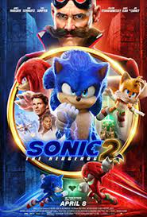

UNITED STATES
there are really cool Places
Times Square in New York is the most visited destination in the US as well as in the whole world. Annual visitors are recorded at 41.9 million.

HHHOOOLLLYYY WWWOOOWWW!!! WHAT AN AMAZING MOVIE!!! I really knew that the production company would be able to extend the awesome series Sonic the Hedgehog but never like this! I really love the message about that just letting go of past losses of companions and just be happy about the new companions you make by doing good deeds for not just yourself it's about taking reasonability for helping other people by doing good deeds for them. Additionally, I am so amused and so overjoyed with Ben Schwartz's performace as the awesome super speed kid Sonic the Hedgehog who is my favorite character. Sonic has now become still energetic and enthusiastic but is now immature and reckless but is also truthful and also very wise who still always likes to have fun and being playful who always loves to be a kid just like me because I also just love being a kid in which I always like to have fun who nows dreams of using is super speed power in very meaningful ways that make a difference in the world. Also I am very overjoyed with Colleen O'Shaughnessey as Tails the Two Tailed Fox as embodied the transformative character by her mentor Sonic. Tails is really lonely though woh doesn't have any friends just like me but is extremely smart as she is able to create all kinds of gadgets in which are used to defeat Dr. Robotnik. Tails also has a super power too in which she can fly. And I also was enjoyed by Idris Elba as Knuckles the Echidna as he embodied the transformative character by his mentor Sonic. Knuckles is very serious about things in life who struggles with anger issues since he had been alone throughout his life. He believes that his entire existence is about honor and being a warrior as he represents himself as the force of nature. His superpower is super strength. What I absolutely just loved about this series now is that the production company really extends now beyond the action of the series and creates very meaningful themes about what it really means to be human which is spoken by Sonic which is why is is my favorite character which is to respect others and always help others to make the world a better place. Even though random people think they are just too weak and too small but pulling other random people together can create small action in big changes with positive creativity. I also really loved who the production company didn't put that much criticism words into this series now. I am so proud of them for that because criticism words are considered really ride to society which his why I never say them. I also loved how that production companies again put so much more original amusement into this movie in which I can really understand much more now which makes it more amusing. Please let this Sonic the Hedgehog series continue forever because it really is like the most successful series there is in the company. I don't want the fun and creativity to end for the cast and crew of this spectacular series. Thank so much for the second astounding movie of the series! This series is full of helpfulness, teamwork, goodness, friendship, family empathy, passion, wisdom, connection, and wonder. Please keep making more of the series that focus on heartfelt messages which bring people together by accepting differences and hearing stories that go unnoticed.
21 people found this helpful.